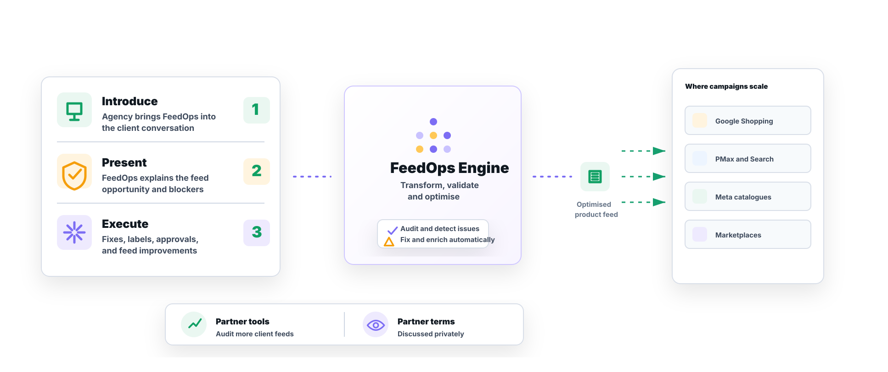

What is a shopping feed agency?
A shopping feed agency helps improve the product data, feed rules, attributes, labels, and channel setup used by Google Shopping, PMax, paid social, and marketplaces.
When product issues, disapprovals, missing attributes, or messy catalogue data slow down Google Shopping, PMax, Meta, and feed-led campaigns, FeedOps acts as your shopping feed agency with a specialist Australian team to bring in for support.
A practical fit conversation with an opportunity review and a short platform walkthrough where it helps.
Quick answers
FeedOps supports media agencies when product feeds, Merchant Center blockers, or catalogue data problems are limiting campaign performance.
A shopping feed agency helps improve the product data, feed rules, attributes, labels, and channel setup used by Google Shopping, PMax, paid social, and marketplaces.
This page is for media agencies and ecommerce teams that need specialist feed support without replacing the agency relationship or media strategy.
FeedOps runs feed audits, diagnoses Merchant Center and catalogue issues, applies feed fixes, supports AI enrichment, and keeps agencies and clients aligned on the next step.
Model
The agency introduces FeedOps to the client, then we present the shopping feed agency solution directly. From there, we collaborate with the agency and client team to diagnose the commercial blockers, remove the issues holding performance back, and create a clear path forward for Shopping, PMax, Meta, and other feed-led campaigns.
Your agency brings FeedOps into the client conversation when product data, approvals, or feed quality are becoming commercial blockers.
We explain the feed opportunity directly to the client, show where the product data is limiting performance, and outline the work needed to fix it.
FeedOps works with the agency and client team to prioritise the issues that matter most, then helps remove the feed, approval, and catalogue problems holding campaigns back.
The agency and client can see what needs fixing, what has been unblocked, and how the work connects back to Shopping, PMax, Meta, and feed-led performance.
FeedOps gives agency partners practical audit tools they can use across their client base to spot feed gaps, approval risks, and product data opportunities earlier.
When to bring us in
Agencies usually meet us when campaign performance is being held back by product data, not media strategy. As a shopping feed agency, FeedOps helps identify the feed issues that block approvals, weaken targeting, or make Shopping and PMax harder to scale.
Merchant Center disapprovals, missing identifiers, policy issues, or account warnings stop campaigns before the media team can do its best work.
We help agencies and clients work through Merchant Center issues, product disapprovals, diagnostics, missing requirements, and policy-related blockers.
Weak titles, poor categories, missing attributes, inconsistent variants, and supplier data gaps make the feed harder for platforms to understand.
Support for custom labels, dynamic custom labels, margin and promotion labels, seasonal groupings, and feed logic that helps media teams segment campaigns.
Your team can manage the campaigns. FeedOps adds feed diagnosis, product data cleanup, and channel readiness without requiring you to hire a feed specialist.
Clear roles
The model is collaborative, but the responsibility is clear. Your agency leads the media strategy and client direction. FeedOps acts as the shopping feed agency that diagnoses product data blockers, does the feed work, and keeps the client and agency aligned on what has been fixed.
Process
Most agencies do not need a complicated engagement model. They need a shopping feed agency that can quickly understand what is broken, what matters, and what needs to happen next.
We look at the product data, channel setup, Merchant Center status, and the campaign context your team is working with.
We separate technical noise from the feed issues that are actually blocking approvals, reach, relevance, or scale.
We help clean, map, enrich, and structure the product feed so the media channels have better data to work with.
When new products, new channels, or new platform rules create issues, your agency has a specialist feed team to call on.
Partner model
FeedOps works as the specialist shopping feed agency alongside your team. We collaborate with the client where it helps, provide strategic input, execute the feed work, and keep the engagement aligned with the agency's media plan.
FeedOps works with your agency team and the client to diagnose feed issues, shape recommendations, and execute practical fixes.
FeedOps joins the conversation when the client needs technical explanation, feed detail, or confidence that the issue is being handled properly.
For agency partners, FeedOps can support a commercial partner arrangement where it makes sense.
Media agency FAQ
Most questions come back to roles, client communication, execution, and commercial fit. FeedOps is designed to work with the agency and the client without taking over the media relationship.
Yes. The agency usually introduces FeedOps to the client, and we present the feed opportunity directly where it helps. We then collaborate with the agency and client team to diagnose blockers and execute the feed work.
No. Your agency leads media strategy, budgets, reporting, and the client direction. FeedOps acts as the shopping feed agency that handles product data, feed health, Merchant Center issues, labels, and feed-led execution.
FeedOps executes the feed work. We audit the feed, diagnose the blockers, fix product data issues, support approvals, build labels, improve feed structure, and report what has changed.
Yes. FeedOps helps agencies and clients work through Merchant Center diagnostics, product disapprovals, missing requirements, approval health, and policy-related feed blockers.
Yes. FeedOps can build and maintain custom labels, dynamic custom labels, margin labels, promotion labels, seasonal groupings, and feed logic that helps media teams segment Shopping and PMax campaigns.
Yes. FeedOps gives agency partners practical audit tools they can use across their client base to spot feed gaps, approval risks, and product data opportunities earlier.
For agency partners, FeedOps can support a commercial partner arrangement where it makes sense. We discuss referral terms, account ownership, and ongoing collaboration directly with the agency.
FeedOps supports Google Shopping, PMax, Meta catalogues, marketplaces, affiliate feeds, local inventory, and other feed-led channels where product data affects approval, targeting, visibility, or scale.
Shopping feed agency

Start with one client, one messy feed problem, or one Merchant Center issue that keeps slowing down Shopping, PMax, Meta, or feed-led campaigns. FeedOps works with the agency and client to diagnose the blocker, execute the feed work, and keep everyone aligned.
Book a demo